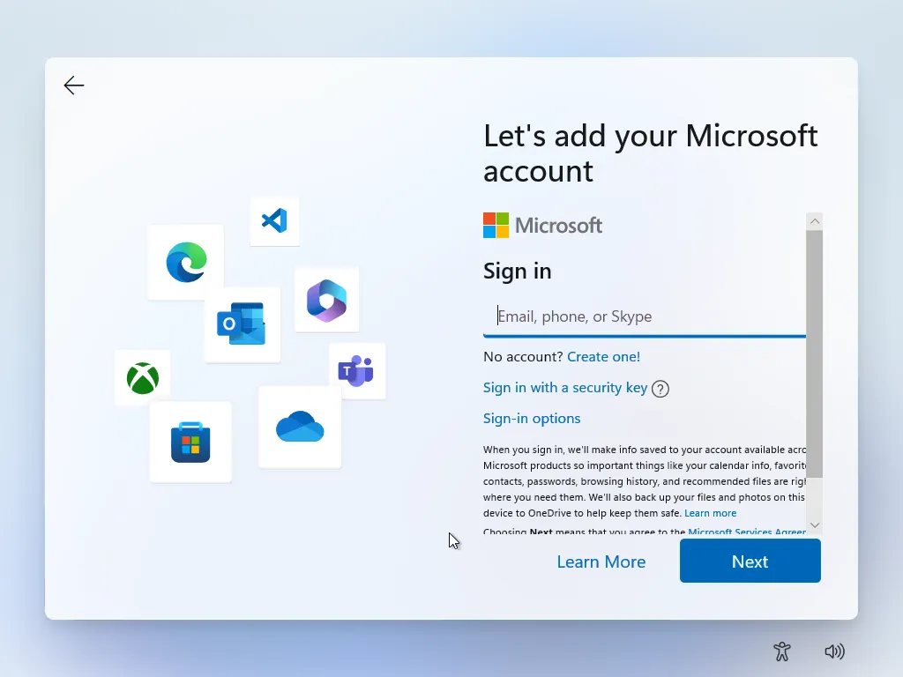

Guide Library
Open a guide to see step-by-step instructions, screenshots, and quick actions.

Setup Guide
Windows Activation Setup Bypass
Use this guide when the machine is on the Microsoft account setup screen and you need to open Command Prompt and launch the local-only setup path.
Includes the correct screen image showing where the command is used
Step-by-step instructions for staff
Command reference included for quick copy
Activation Tool
KMS Activation Tool
Internal reference page for the KMS batch tool used to activate Windows and Office. The download is served from your own website so staff are not blocked if the external source has issues.
Explains what the tool is used for
Provides your own hosted download link
Includes original source reference